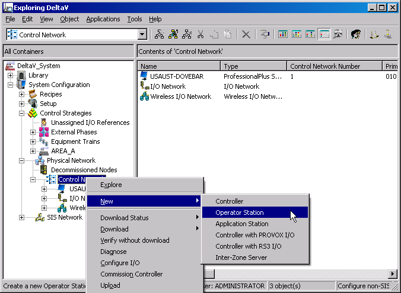
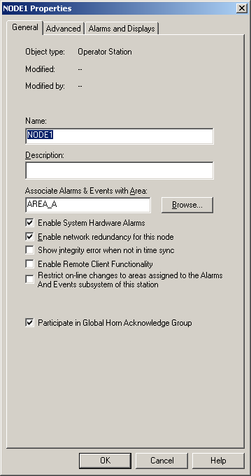

Add other workstations to the system in DeltaV Explorer
On the ProfessionalPLUS workstation, open DeltaV Explorer.
Select and right-click
Control Network.
From the context menu, select
New > Operator
Station.

The
Node Properties dialog opens.

On the
General tab, enter the name for the Operator
Station. For remote nodes, the new workstation node names must be the same as
the Windows names for those machines.
Accept the default settings, and then click
OK. By default, the new workstation is created
with DeltaV network redundancy enabled. If your DeltaV system uses a simplex
network, deselect
Enable network redundancy for this node.
The new workstation node appears under
Control Network.